История Омска
Старые фотографии Омска
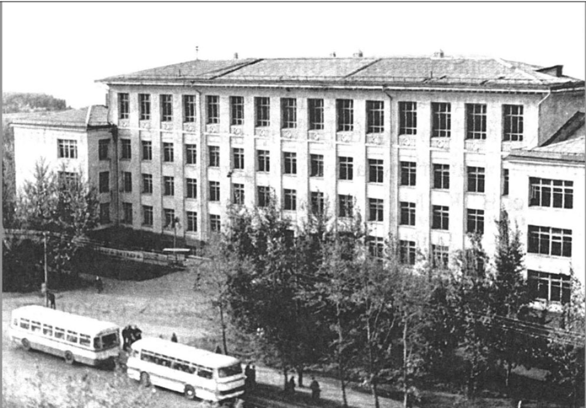
Омск. 1960-е гг. СибАДИ.
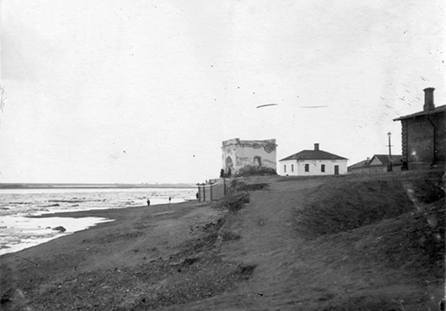
Ворота таможенной заставы. Фото начала XX века.
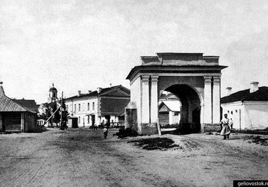
Любинский проспект. Фото 1910-х годов
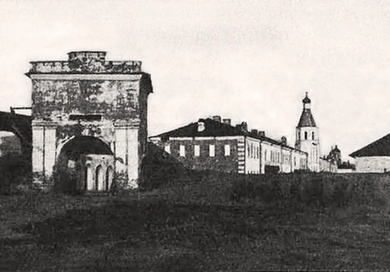
Тобольские ворота в конце XIX века
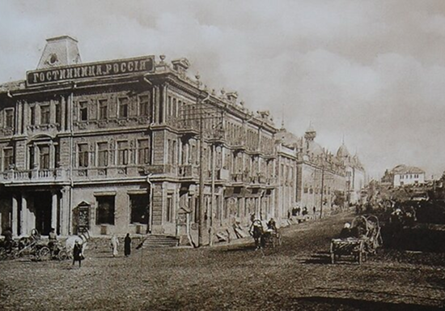
Тарские ворота в конце XIX века
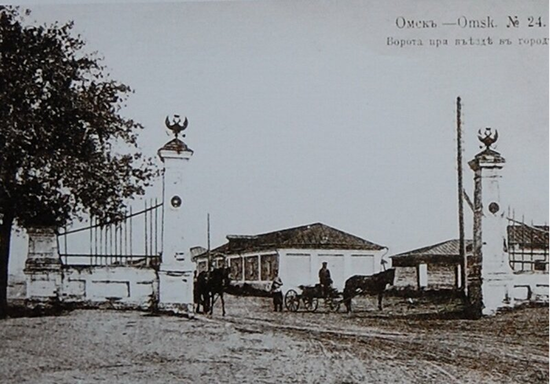
Иртышские ворота. Вид со стороны устья Оми. Начало XX века
Карты и планы города
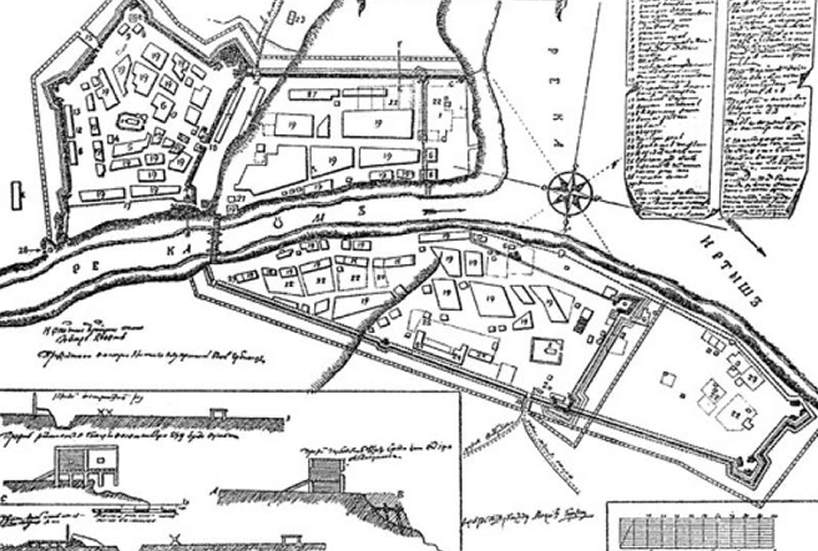
План первой Омской крепости, составленный в 1755 году
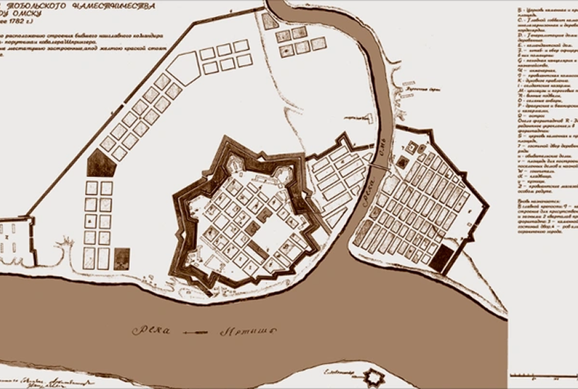
Энциклопедия города Омска: в 3 т. / под ред. Г. А. Павлова, Л. В. Новоселовой, С. Г. Сизова /
Омская крепость, основанная в 1716 году, сыграла ключевую роль в освоении Сибири, но не сразу стала столицей. Однако, в период с 1822 по 1839 годы, когда Омск был административным центром Западной Сибири, крепость фактически выполняла функции столичного центра, сосредоточив в себе органы управления огромной территорией и став резиденцией генерал-губернатора. Это время стало периодом интенсивного развития города, роста его экономического и политического значения, заложив основу для дальнейшего развития Омска как крупного сибирского центра. Именно благодаря своему стратегическому расположению и развитой инфраструктуре, сформировавшейся вокруг крепости, Омск получил столичный статус, пусть и временный, оставив значительный след в истории города и региона.23:04
Знаменитые люди Омска
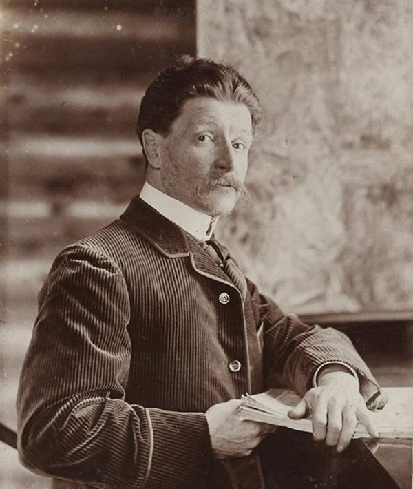
Михаил Александрович Врубель – художник
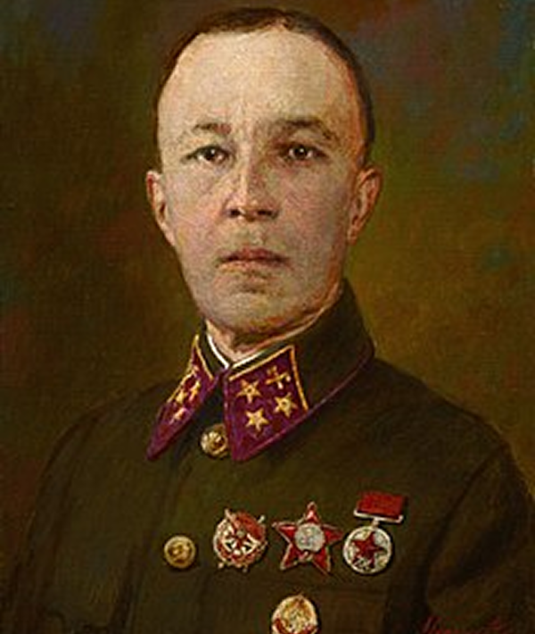
Дмитрий Михайлович Карбышев – военный инженер
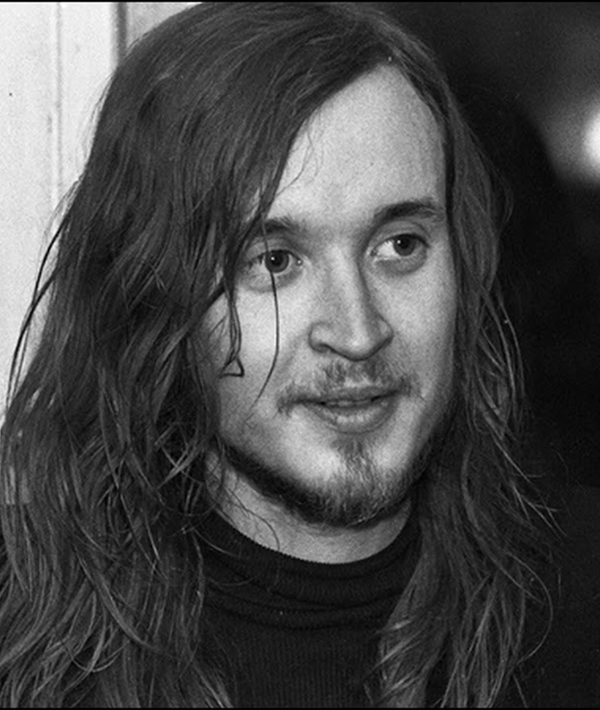
Егор (Игорь) Федорович Летов – музыкант, лидер группы «Гражданская Оборона»
Ирина Викторовна Чащина — российская спортсменка, гимнастка.